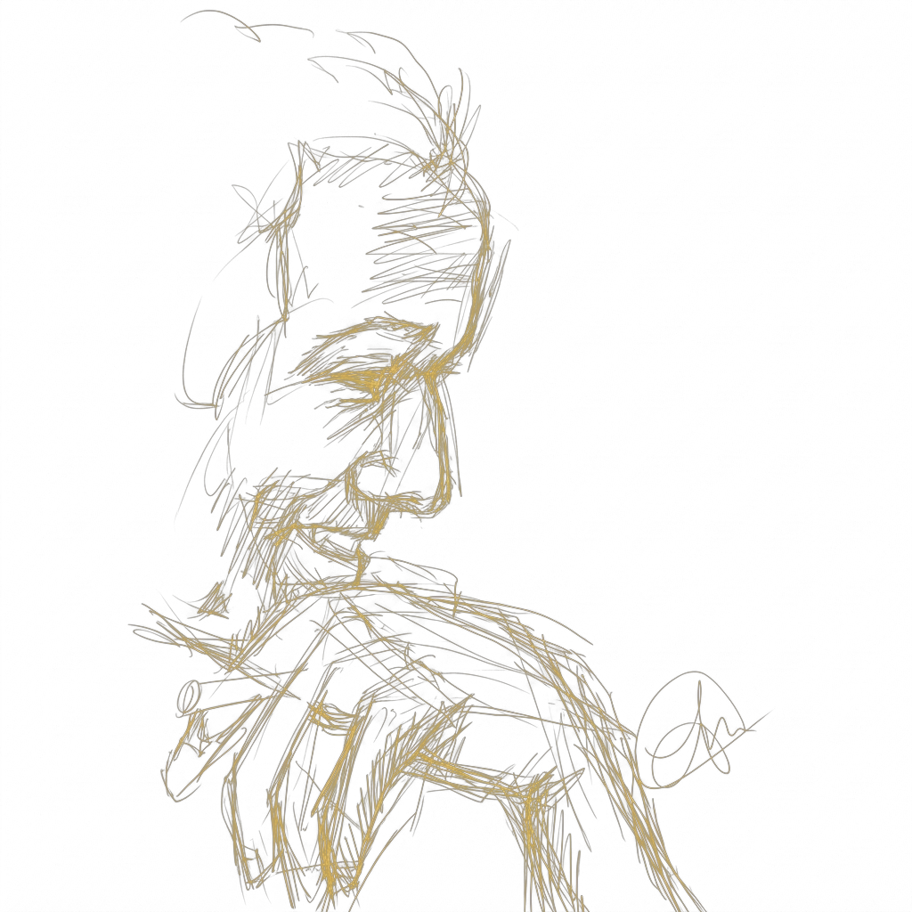

Intelligence engines exist and work.
A physical theory of them does not.
Biological brains. Deep networks. Neuromorphic chips. We build them, operate them, and depend on them — at ruinous energetic cost.
A principled account of what an intelligence is, what it costs, and what any given physical substrate can efficiently do.

PhD from King's, postdoctoral work at Tulane, and 25-plus papers across quantum control, open systems, reservoir computing, superoscillations, and Koopman methods. Synthetics sits exactly at the intersection I already work in.
The residency extends both into dynamics, connects them formally, and applies them to neuromorphic computing.
Dynamical systems theory is the glue: biological, quantum, and neuromorphic learners are three physical realisations of the same operator algebra. Embodiment then imposes constraints — and constraints are where design principles come from.
A synthesis which cannot be stated across the fields it unifies hasn't unified them.
Synthetics asks what intelligence is as a physical process, what embodied representations cost, and what different substrates can efficiently do.
I work at the intersection of quantum theory, thermodynamics, and machine intelligence — the three fields Synthetics proposes to unify. Twenty-five-plus papers across quantum control, open quantum systems, reservoir computing, superoscillations, and Koopman methods. I also write essays that are too long, and compose music that makes people wince.